My BMW Story: 1969-2019
click images to enlarge
August 1969 Frankfurt, Germany
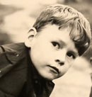
{kind=link}
Dad sold the Porsche in 1969. He said it was rusting too much. He needed something new and reliable. One August day I joined he and my mother for drive over to the Eueler BMW dealership. I remember him getting out of the Country Squire and saying "I'll see you back at the house soon". Maybe about an hour or so later, he pulled up out front in a 1969 Bristol Grey BMW 2002. I remember the neighbors came out to admire the car. We all gathered around it to admire it. I sat in the passenger seat with the neighbor girl Stephanie Blair whom I deemed my first "girl friend". I remember how much of a positive impression this BMW 2002 made on Stephanie. Of course there were more father-son bonding moments pushing the 2002 through its paces up in the Taunus Mountains. So the story gets more interesting.
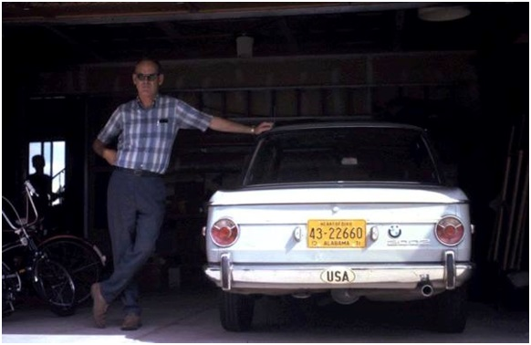
my father with his 2002 pictured in 1971 (Colorado Springs). That's my silouette in the backgroundPan forward to our move back to the United States in 1971. We brought the BMW back with us. Dad also bought a 68 2500 sedan when we settled in Colorado Springs. We were now a two BMW family. Being a BMW owner in the United States in the early 1970s was unique. You didn't really see bimmers. I remember riding with my dad down the road, and once in a blue moon seeing another BMW coming our way. I remembering my adreline pumping and thinking "wow! another BMW". The other driver as well as my father would both flash their high beems in that special handshake which would give me even a higher elevated sense of something - almost like a buzz or a high. Dad joined the BMWCCA in 1972. We moved to the Washington D.C. area in 1976. In 1979 we moved to Dunwoody, Georgia (suburb of Atlanta). This is where I learned to drive in the parking lot of Dekalb Community College's new north campus. It was in Dad's 69 Bristol 2002. He took really good care of the car, but rust was showing in all the usual places.
1970 BMW 2002 My First Car
In 1980 my dad helped me find my first car. We found an oxadized red 70 2002 with 140,000 miles in Columbus, Georgia owned by an enthusiast (Al Sweat). Al actually had it as a second car to his pristine tii. The 70 2002 needed body work, paint, 2nd gear synchro, valve guides, master cylinder, and a new clutch plate. My dad said he'd buy me the car if I would do all the work to get it back in good running order including body work and paint. I think he might have also been wanting to take a stab at major DIY repairs on a 2002 without risking messing up his own 2002. This is where my passion for old BMWs really took off. I found out with some careful research, some technical support and appropriate tools, I could actually do some major repairs to a car. The 2002 didn't mock me. It encouraged me. Such a brilliantely engineered car. It's almost like we developed a relationship of sorts. These cars do put a hook in you. I did body work and had the car painted. An acrylic paint over the original. It looked great, but only lasted about 2 years and then it started to craze and peel.
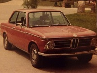 |
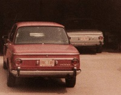 |
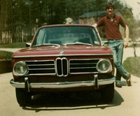 |
{kind=link}
{kind=link}
{kind=link}
WHAT TYPE OF BMW IS THAT?! My first view of a 2000cs
Sometime in 1981 my best friend and I were driving around Roswell, Georgia in my newly painted awesome 2002. He was into old Jaguars and he knew of this lot off of Roswell Road that had a bunch cool old E-types, along with some Healy 3000s, and what not. It was amazing how cheap E-types were back then. It was there I spotted my first BMW 2000cs. I was mesmerized. Those front grills were so different. My first impression is that the car almost seemed like a bridge between the 30s - 50s era BMW and the New Class 60s era. I was quite familiar with and coveted (worshipped) the e9 coupé. This was a white CS. It was sort of half CS and half pre-60s. It mesmerized me with its unique and daring front end. The owner came out and encouraged me to sit in the 2000cs. It was unbelievably comfortable. Blue veleour interior. I was absolutely entranced by that elegant nicely polished wooden dash accentuated by chrome. The doors are works of art with the handle or pull running in a long rise from the back to front with that long carpet covered map pocket. Touches of chrome and wood in a bauhaus art deco style. Under the hood two double barrel side draft Solex carbs with that fancy air filter.
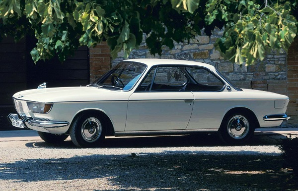
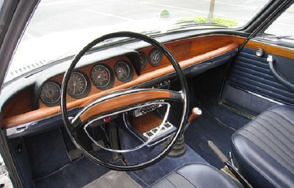
The guy who owned the vintage car lot offered to trade to me strait up for my 70 2002. Yes, a 67 2000cs trade for a high mileage 70 2002. I went home and told my dad. He said "no, no, no". He was familiar enough with the car to know it was not as "inviting" as the 2002. I think his words were "they are a lot more complicated". That was the last time I sat in a e120 BMW. In fact I only saw one by chance a few years later. I would go for decades and not see one. My parents gave me a BMW coffee table book for Christmas in 1982. It was there I viewed what I thought was the 2000cs taken to perfection. A pale yellow (most likely Isetta color) e120 with e9 brown interior and 15 inch Panasport rims. The California plates said "Franz F". I would wonder for years who he was.
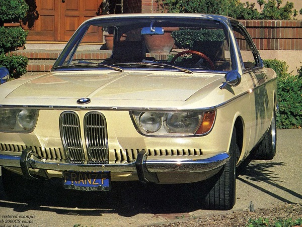
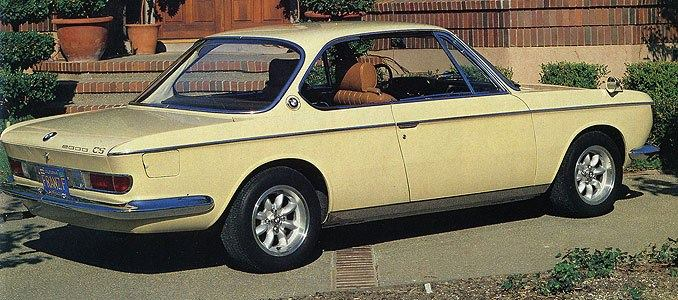
More 2002s Come and Go
I drove my 70 2002 for 7 years and sold it in 1987 to buy a Pastel Blue 76 2002 which I drove across the country and back. I owned a 73 2002 as well which turned out to be a complete disaster. A victim of previous idiot mechanics and owners. By 1992 I sold my last vintage BMW and set out to be park ranger traveling the country.
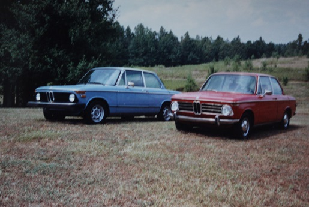
New Era of Vintage BMWs
By 1997 I decided to settle down, buy a house and get another vintage BMW. My dad sold me a 71 2800cs I talked him into buying years earlier. He wasn't really into the e9s. It was a great car, although I would often scrutinize it denoting that the front end seemed a bit too long. Very subtle, but a deviation from Giovanni Michelotti's original vision. My e9 ownership didn't last long when I had to sell the car following a divorce.
Longing to own a vintage BMW on a budget, I bought a worn out, rusted 76 2002 on an impulse in October 2002. Total piece of shit. I thought I could do the basic repairs and body work I did on my 70 2002, but soon learned this car was in need of a lot more work. After buying a house, and building a garage I decided to really try and restore the car. I installed a big air compressor and taught myself how to paint using an HVLP gun. I replaced the motor, converted the bumpers to earlier style "euro" bumpers, replaced the fenders, patched the rockers, and took it down to the bare metal. This car was a learn-as-you-go experiment. I really mastered bare metal to clear coat painting and finished the restoration in 2015. I pretty much rebult and replaced everything on the car. Most importantly I learned what to do and not do with body and paint.
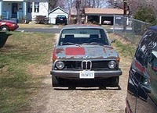 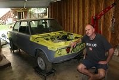 |
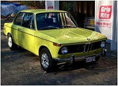 |
{kind=link}
{kind=link}
{kind=link}
Buying a basket case 1966 BMW 2000 C
In 2013 I bought the total disaster 2000 CS rescued from the crusher. I didn't even think when I committed to buy. I was warned that it probably was more destined to be a parts car. I didn't hear a word said, I just had to have it. It was abandoned and was going to be destroyed. Don't care! gotta have it. Ask and you shall receive. The car was indeed a mess. So, I realized the second rescued 2000c would also need to be purchased in 2014. This one has good bones. Not too too rusted where it counts so I tell myself. Finally, after 35 years I was sitting in another e120 coupé. Destiny. How hard could it be? A voice in the back of my mind echoed "they are a lot more complicated". Don't care, gotta have it.
Dad's 1969 2002
My father died in 2008. My sister kept his car for a few years, but in 2010 wanted me to be the next owner. I flew down to Alabama and drove the car back up to Virginia. It was in 1979 I rode in the car the other way. Back in Fairfax county again. I love this car. It is a part of the family. Dad took good care of it. I hope I can do as well. He did have the car restored in 1991 converting the color to a contemporary BMW silver. I decided to put the 14 x 5.5 NK rims and e120 dog bowls on giving it a special look. My wife Cecelia and I drove the car down to the Vintage BMW 100th anniversary in Asheville, North Carolina in 2016. I couldn't help but think about sitting in the car with Stephanie Blair back in 1969.
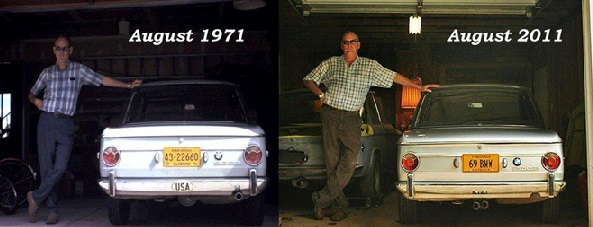
2017 and onward
I sold my restored 1976 2002 to a collector in California in December 2016. One of those rare occassions where an east coast vintage BMW goes to California. I was very pleased with the price and the accolades I have received regarding the car. I proved to myself I could tackle tough restoration issues. Now time to devote myself to the e120 coupe. Interestingly I met someone who knew Franz F, the owner of the yellow 2000cs I saw 35 years prior. Tom Jones of Casey Motorsports and his father were friends with Franz. Tom actually sat in the car as a kid. He said the car met its untimely demise at the track on a tight curve years back. Franz has since passed on too. I hope to ressurrect his vision again. The other inspiration is John Barlow's 2000cs featured in Retromod . I have had the honor of talking to John who dropped an S14 motor from an e30 M3 in the car. Visions of combining Franz and John's e120s inspire.